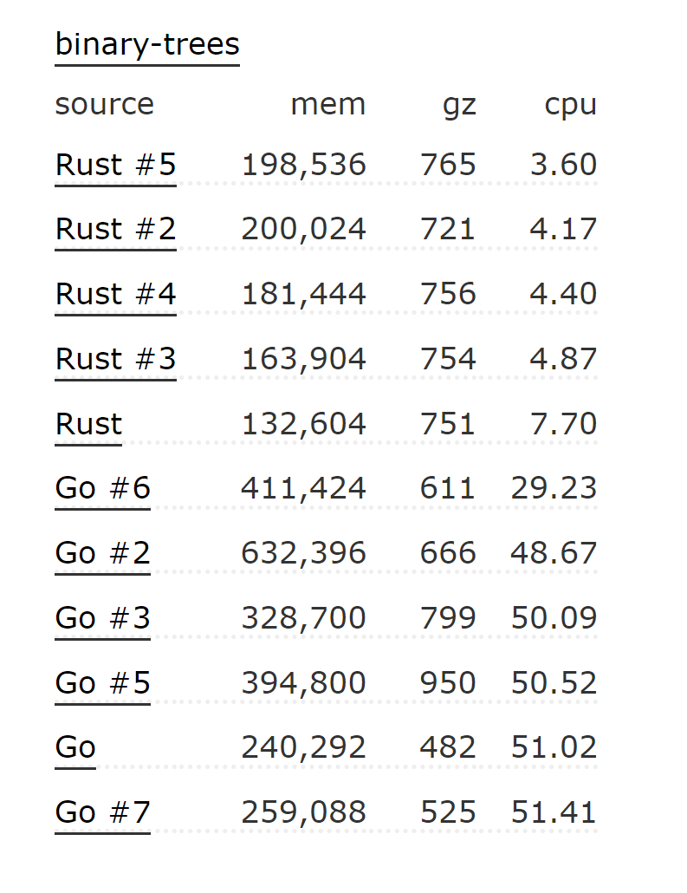
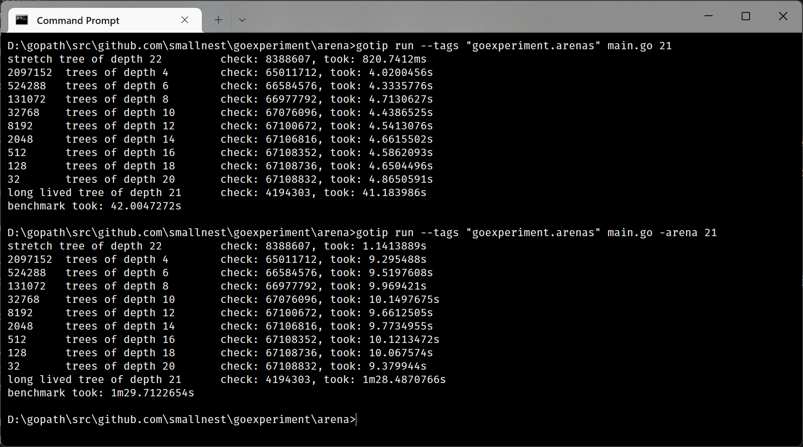

Go语言是一个极容易上手的语言，而且Go程序的优化套路基本上被大家莫得清清楚楚的，如果你有心，可以在互联网上搜出很多Go程序优化的技巧，有些文章可能只介绍了几个优化点，有些文章从CPU的架构到Slice预分配，再到通过pprof找性能的瓶颈点等等全面介绍Go程序的优化，所以说可见的手段基本上被大家摸得门清，最近老貘出了一道题，如下所示，可以看到大家对Go语言的优化已经摸的多深了。
|
|
Go 官方也没闲着。虽然Go语言创立之初也并没有目标要和C++语言打平性能，但是Go团队对Go语言的编译和运行时优化也一直在进行着。
最近，Go语言也正在新加两个性能优化的特性，一个是cmd/compile: profile-guided optimization, 这个提案已经被接受, 后续功能初步成型后我们再介绍。另外一个增加memory arena。
除了大家常见的通用语言的优化外，影响Go程序性能最大的问题之一就是垃圾回收，所以使用C++、Rust开发的程序员diss Go程序的原因之一。不过这也是垃圾回收编程语言无法绕开的特性，基本上无可避免的带有STW的开销，即使没有STW,垃圾回收时也会耗资源进行对象的便利和检查，所以理论上来说Go性能相比较C+/Rust语言性能总会差一些，除非你禁用垃圾回收、纯粹做CPU计算。
Debian的 benchmark's game网站测试和公布了好多语言的一些场景的性能比较，比如下面这个是Rust和Go的几个实现版本的性能比较：

可以看到在这个二叉树的场景下Go的性能比Rust的也差很多。不过性能最好的Rust实现使用arena的内存分配：
|
|
arena是一个内存池的技术，一般来说arena会创建一个大的连续内存块，该内存块只需要预先分配一次，在这块内存上的创建和释放都是手工执行的。
Go语言准备新加入 arena 的功能，并在标准库提供一个新的包: arena。当前这个提案还是holding的状态，但是相关的代码已经陆陆续续地提到master分支了，所以说配批准也基本跑不了了，应该在Go 1.20，也就是明年春季的版本中尝试使用了。(当然也有开发者对Go的这种做法不满，因为外部开发者提出这种想法基本上被驳回或者不被关注，而Go团队的人有这想法就可以立马实现，甚至提案还没批准)。
包arena当前提供了几个方法:
- NewArena(): 创建一个Arena, 你可以创建多个Arena, 批量创建一批对象，统一手工释放。它不是线程安全的。
- Free(): 释放Arena以及它上面创建出来的所有的对象。释放的对象你不应该再使用了，否则可能会导致意想不到的错误。
- NewT any *T： 创建一个对象
- MakeSliceT any []T: 在Arena创建一个Slice。
CloneT any: 克隆一个Arena上对象，只能是指针、slice或者字符串。如果传入的对象不是在Arena分配的，直接原对象返回，否则脱离Arena创建新的对象。
当前还没有实现
MakeMap、MakeChan这样在Arena上创建map和channel的方法，后续可能会加上。arena的功能为一组Go对象创建一块内存，手工整体一次性的释放，可以避免垃圾回收。毕竟，我们也提到了，垃圾回收是Go程序的最大的性能杀手之一。
官方建议在批量创建大量的Go对象的时候，每次能以Mib分配内存的场景下使用更有效，甚至他们找到了一个场景： protobuf的反序列化。
因为涉及到垃圾回收、内存分配的问题，所以这个功能实现起来也并不简单，涉及到对运行时代码的改造。不考虑垃圾回收对arena的处理， arena主要的实现在在运行时的arena.go中。因为这个功能还在开发之中，或许这个文件还会有变更。
接下来，我们使用debian benchmark's game的二叉树的例子，对使用arena和不使用arena的情况下做一个比较:
|
|
这段程序中我们使用-arena参数控制要不要使用arena。首先你必须安装或者更新gotip到最新版(如果你已经安装了gotip, 执行gotip downloamd,如果还未安装，请先go install golang.org/dl/gotip@latest)。
- 启用
-arena: 运行GOEXPERIMENT=arenas gotip run -arena main.go 21 - 不启用
-arena: 运行GOEXPERIMENT=arenas gotip run -arena=false main.go 21
不过这个特性还在开发之中，功能还不完善。
我在MacOS上测试，使用arena性能会有明显的提升，而在windows下测试，性能反而下降了。
